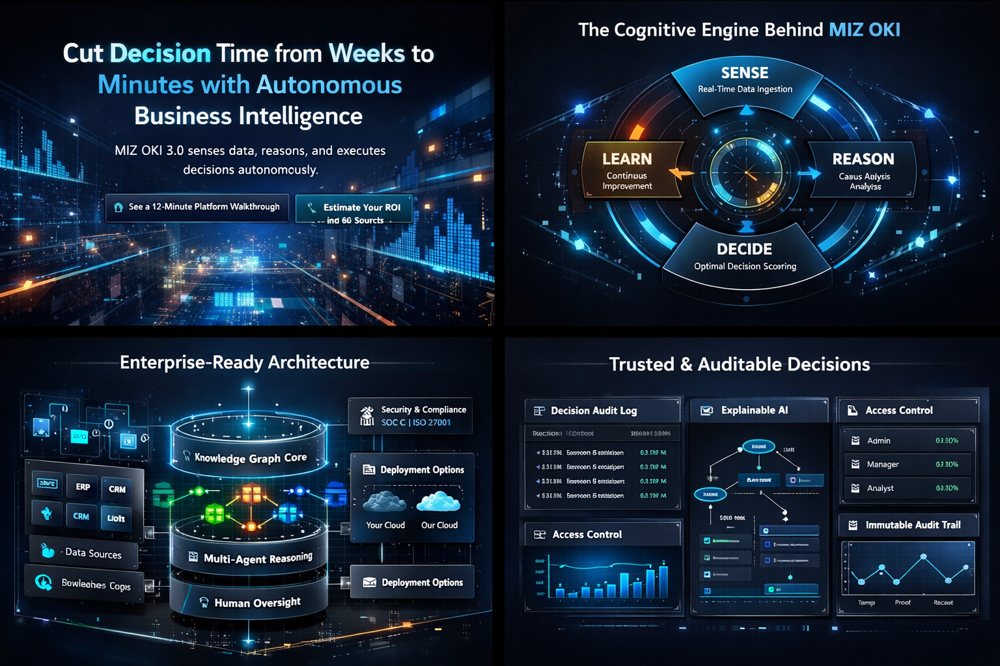

Decisions verified before execution—not explained after failure
MIZ OKI 3.5 is the first Business General Intelligence platform where autonomous agents propose actions, but a Decision Control Plane verifies, simulates, and authorizes every decision before execution. No black-box AI. Full auditability. 50-75× faster decisions.
No rip-and-replace. No black-box autonomy. Agents cannot bypass governance.
7-Stage Autonomous Intelligence Loop
Measurable Impact Across Enterprises
This is not analytics. This is operational intelligence. Every action is logged. Every decision is auditable.
| Outcome | Typical Result |
|---|---|
| Decision latency | ↓ 50–75× |
| Revenue leakage | ↓ 18–35% |
| Operational cost | ↓ 22–41% |
| Payback period | ≈ 3.2 months |
| Automation coverage | Up to 89% |
The Seven-Stage SRDPV-DAL Pipeline
Every decision flows through a verifiable pipeline. PLAN and VALIDATE stages ensure proposals are challenged before the Decision Control Plane authorizes execution.
S SENSE
Autonomous attention allocation. Ingests live signals from ERP, CRM, market data, and operations.
R REASON
Causal GraphRAG traverses the knowledge graph. Automated confounder detection and causal pathway analysis.
P PLAN
Generates multiple candidate actions through causal reasoning. Multi-objective optimization across probability, value, and ethics.
V VALIDATE
Independent Verifier, Risk, and Policy agents challenge every proposal. Disagreement is signal, not error.
D DECIDE
The Decision Control Plane authorizes, modifies, defers, rejects, or escalates. Agents cannot bypass the DCP.
A ACT
Orchestrates execution with dependency resolution and adaptive rollback. Real-time performance monitoring.
L LEARN
Prioritizes learning by prediction error and business impact. Stability-plasticity balance for reliable updates.
Core Architectural Innovations
Four breakthroughs that enable verifiable, governed autonomy—suitable for enterprise and regulated environments.
Decision Control Plane (DCP)
Centralized authority that receives proposals from autonomous agents and authorizes, rejects, modifies, or defers them. Agents cannot bypass the DCP—this separation of proposal from authorization is a fundamental architectural constraint.
Validation & Arbitration Layer (VAL)
Planner, Verifier, Risk, and Policy agents independently evaluate each proposal. Disagreement is signal, not error. Arbitration resolves conflicts based on confidence thresholds and historical accuracy.
Counterfactual Simulation Engine (CSE)
Before execution, simulate the proposed action, alternatives, and a no-action baseline. Learn from simulated outcomes without real-world risk. Authorization denied when alternatives score higher.
Temporal-Causal Knowledge Graph (TCO-KG)
Decision memory and audit spine. Stores facts, proposals, simulations, outcomes, and causal confidence with timestamps. Every decision is traceable. Every outcome feeds learning.
Built for Scale, Security, and Trust
Enterprise-ready by design. You keep control. The system handles complexity.
Plug-in Architecture
Connects to your ERP, CRM, data warehouse, and cloud stack.
Quantum-Resistant Security
CRYSTALS-Kyber key encapsulation, CRYSTALS-Dilithium signatures.
Multi-Agent Reasoning
Experts collaborate, debate, and synthesize decisions.
Human-in-the-Loop Controls
Full override, thresholds, and governance controls.
Full decision traceability • Explainable reasoning paths • RBAC • Immutable audit logs • Deploy on your cloud or ours

Designed for High-Stakes Decisions
Pre-configured industry templates with causal models, agent configurations, and compliance frameworks.
🏪 Retail & Commerce
Demand forecasting • Pricing optimization • Inventory risk reduction
💰 Finance & Capital
Risk exposure modeling • Scenario simulation • Portfolio decision automation
⚙️ Operations & Supply Chain
Bottleneck prediction • Cost optimization • Disruption response
🏥 Healthcare
Compliance-aware automation • Resource optimization • Outcome forecasting
📺 Media Buying
Attribution models • Channel optimization • Threshold-aware bidding
🏭 Manufacturing
Quality models • Maintenance schedules • Production optimization
Not Ready for a Demo?
Estimate your impact first. Reduce friction. Increase certainty.
Interactive ROI Calculator
Estimate annual value and payback based on your baseline.
Sample Decision Logs
See what auditable decision traces look like (redacted).
Security & Compliance Brief
Governance, traceability, and deployment controls.
"Decisions verified before execution—not explained after failure." Agents propose, but the Decision Control Plane authorizes. This separation is the fundamental architectural constraint that enables governed autonomy.